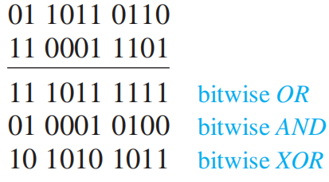

Chapter 1 The Foundations: Logic and Proofs
1.1 Propositional Logic(命题逻辑)
Propositions(命题)
proposition：一个陈述句，要么真要么假，但不同时为真为假
proposition variables(命题变量) 一般用字母（e.g. \(p, q, r, s \dots\)表示）
命题的分类：
- atomic proposition(原子命题)不能被表示成更简单的形式
- compound proposition(复合命题)由一些命题通过logic operators连接而成
Truth Tables(真值表)
可以用来判断是否为Equivalent Propositons(后面会讲到)
注（涉及第6章计数的内容）：
- 如果有\(n\)个命题变量，那么真值表就会有\(2^n\)行
- 如果有\(n\)个命题变量，那么就可以构造出\(2^{2^n}\)个不同的命题
Logic Operator(逻辑运算符)
设\(p, q\)为两个不同的命题
Negation(否定)：\(\neg p\) (read not p)
| \(p\) | \(\neg p\) |
|---|---|
| T | F |
| F | T |
Connective(连接符)
-
Conjunction(合取)：\(p \land q\) (read p and q)
\(p\) \(q\) \(p \land q\) T T T T F F F T F F F F 注：有时候but也表示 \(\land\)
-
Disjunction(析取)：\(p \lor q\) (read p or q)
\(p\) \(q\) \(p \lor q\) T T T T F T F T T F F F -
Exclusive Or(XOR)(异或)：\(p \oplus q\) (read p XOR q)
\(p\) \(q\) \(p \oplus q\) T T F T F T F T T F F F 注：
- either…or…表示XOR
- or有时也表示XOR，具体结合语境看，所以or有两种含义：
- Inclusive or : \(\lor\)
- Exclusive or : \(\oplus\)
Conditional Statements(条件语句)
-
Conditional statements(Implication)：\(p \rightarrow q\) (read if p, then q)
\(p\) \(q\) \(p \rightarrow q\) T T T T F ==F== F T T F F T 注：
- \(p\)被称为hypothesis(前提), \(q\)被称为conclusion(假设)
- 条件语句的多种表述：
 :heavy_exclamation_mark:重点记住这两个，很容易混淆：
:heavy_exclamation_mark:重点记住这两个，很容易混淆： - ==\(p\) only if \(q\)==
- ==\(q\) unless \(\neg p\)==
- 从真值表可以看出，前提和结论之间不必有任何关联，\(p \rightarrow q\)只取决于\(p\)和\(q\)的真值
- *Implication Law: \(p \rightarrow q \equiv \neg p \lor q\) (1.3节会讲到的)
-
Converse(逆命题)：\(q \rightarrow p\)
-
Contrapositive(逆否命题)：\(\neg q \rightarrow \neg p\)
-
Inverse(否命题)：\(\neg p \rightarrow \neg q\)
注：逆否命题与原命题等价(Equivalent) (见1.3节)
-
Bioconditional(Bi-implication)(双条件句)：\(p \leftrightarrow q\) (read p if and only if q)
\(p\) \(q\) \(p \leftrightarrow q\) T T T T F F F T F F F T 注：
- 双条件句的多种表达：
- \(p\) is necessary and sufficient for \(q\)
- if \(p\) then \(q\), and conversely
- \(p\) iff \(q\) (iff = if and only if)
- \(p\) exactly when \(q\)
- \(p \leftrightarrow q \equiv (p \rightarrow q) \land (q \rightarrow p)\)
- 双条件句的含蓄表述：可能使用if, then 或 only if 来表示 if and only if
Precedence(优先级)
| Operator | Precedence |
|---|---|
| \(\neg\) | 1 |
| \(\land\) | 2 |
| \(\lor\) | 3 |
| \(\rightarrow\) | 4 |
| \(\leftrightarrow\) | 5 |
注：
- 2、3为一组，4、5为一组
- Parentheses(括号)优先级最高，当忘记优先级顺序时可用括号
Logic and Bit Operations(逻辑和位运算)
Bit(位)：一种表示两种可能值的记号，即0和1。计算机用bit表示信息，bit也能用来表示真值
Boolean variable(布尔变量)：值为true或false的变量
上面所有表格中的“T”可用“1”代替，“F”可用“0”代替
Bit strings(位串)：由0个或多个位构成的序列，它的长度即位的个数
Bitwise operations(按位运算)
- bitwise OR(按位或)
- bitwise AND(按位与)
- bitwise XOR(按位异或)

补充知识（来自ex.49-51)
Fuzzy Logic(模糊逻辑)：一个命题的真值是[0, 1]间的数。真值为0的命题被认为是false，真值为1则被认为为true，0-1之间的数表明不同的真实程度。被用于人工智能中。
1.2 Application of Propositional Logic(逻辑命题的应用)
Translating English Sentences
easy: 找原子命题，找逻辑运算符，然后组合起来
System Specifications(系统规范)
在上面部分的基础上多出consistent(一致)的概念：有一组命题变量的可能赋（真）值，对一组命题中的每一条命题均成立。
~~Boolean Search~~
~~(现在主流搜索引擎好像都没有这个功能吧)~~
Logic Puzzles
看看课本例题
~~Logic Circuits~~
~~(数逻应该会讲吧)~~
1.3 Propositional Equivalences(命题等值)
Logical Equivalence(逻辑等值)
- Tautology(永真)：真值总是为真的命题
- Contradiction(永假)：真值总是为假的命题
- Contingency：既非永真亦非永假的命题
Logically equivalent的定义：
- 定义1：在任何情况下都有相同的真值的复合命题
- :small_red_triangle: 定义2：$p \leftrightarrow q $为永真
记为\(p \equiv q\)
:star2:De Morgan Laws(德·摩根定律)
- \(\neg (p \land q) \equiv \neg p \lor \neg q\)
- \(\neg(p \lor q) \equiv \neg p \land \neg q\)
拓展版：
-
\(\neg(\bigvee ^ n _{j = 1}p_j) \equiv \bigwedge ^ n _{j = 1} \neg p_j\)
即\(\neg(p_1 \lor p_2 \lor \dots \lor p_n) \equiv (\neg p_1 \land \neg p_2 \land \dots \land \neg p_n)\)
-
\(\neg (\bigwedge ^ n _{j = 1}p_j) \equiv \bigvee ^ n _{j = 1} \neg p_j\)
即\(\neg (p_1 \land p_2 \land \dots \land p_n) \equiv (\neg p_1 \lor \neg p_2 \lor \dots \lor \neg p_n)\)
注：使用时注意改变连接符，且\(\equiv\)两边连接符要一致:exclamation:
conditional-disjunction equivalence：\(p \rightarrow q \equiv \neg p \lor q\)
:heavy_exclamation_mark::heavy_exclamation_mark::heavy_exclamation_mark:重要逻辑等价表


一些补充：
- Exportation law：\((p \land q) \rightarrow r \equiv p \rightarrow (q \rightarrow r)\)
- Absurdity law：\((p \rightarrow q) \land (p \rightarrow \neg q) \equiv \neg p\)
构造新的逻辑等值：灵活使用上表规律转化出等价的命题，具体例子见书本
Propositional Satisfiablilty(命题满足)
当存在某个对于命题变量的真值能使命题为真，称这种命题是satisfiable(可满足的)
否则（即所有可能得对于命题变量的真值都无法使命题为真）称为unsatisfiable(不可满足的)
Application
The n-Queens Problem
Sudoku Puzzle